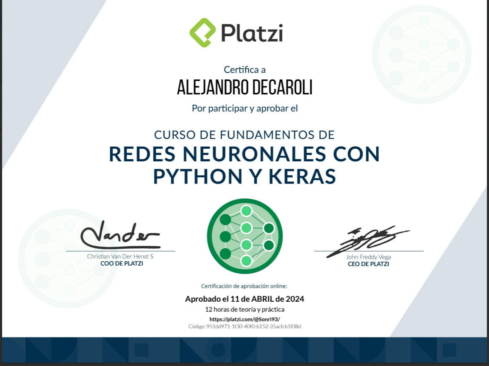

Alejandro Decaroli
Desarrollador apasionado por la tecnología y el aprendizaje continuo, enfocado en crear soluciones innovadoras y eficientes.
Sobre Mí
Soy un estudiante proactivo y desarrollador con una fuerte pasión por la tecnología y el aprendizaje continuo. Mi enfoque principal es el Machine Learning, donde busco aplicar mis habilidades para resolver problemas complejos y construir aplicaciones inteligentes. Constantemente estoy explorando nuevas herramientas y técnicas para mejorar mis conocimientos.
Educación
Ingeniería en Sistemas de Información
Universidad Tecnológica Nacional (UTN), Facultad Regional Rosario
(2022 - Presente)
Certificados y Cursos
Fundamentos de Redes Neuronales
Stack Tecnológico
Proyectos
Regresión Lineal
Regresión lineal simple y múltiple con Scikit-learn sobre los datasets "Tips" y "Insurance" para predecir propinas y costes de seguros.
Ver en GitHubRegresión Logística
Implementación de regresión logística simple y múltiple para problemas de clasificación.
Ver en GitHubBlog
Próximamente: Mi Primer Artículo
Aquí aparecerán artículos sobre Machine Learning, desarrollo de software y tecnología. ¡Vuelve pronto para leer más!
Leer másPróximamente: Conceptos Clave
Explicaciones detalladas sobre algoritmos, arquitecturas de modelos y mejores prácticas en el mundo de la Inteligencia Artificial.
Leer másContacto
- Rosario, Argentina
- alejandro.decaroli@hotmail.com
- GitHub